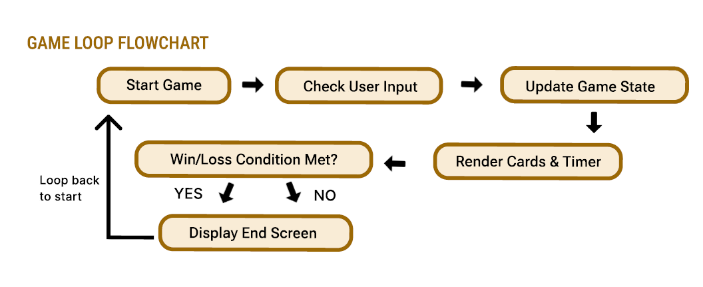
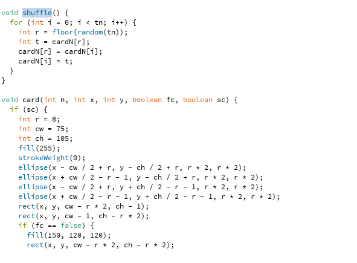
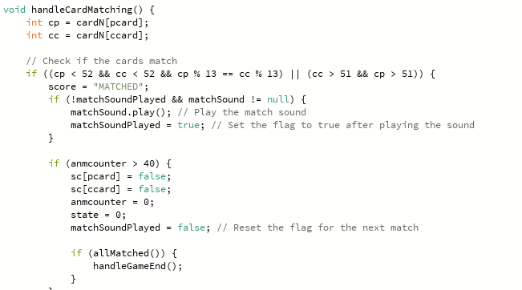
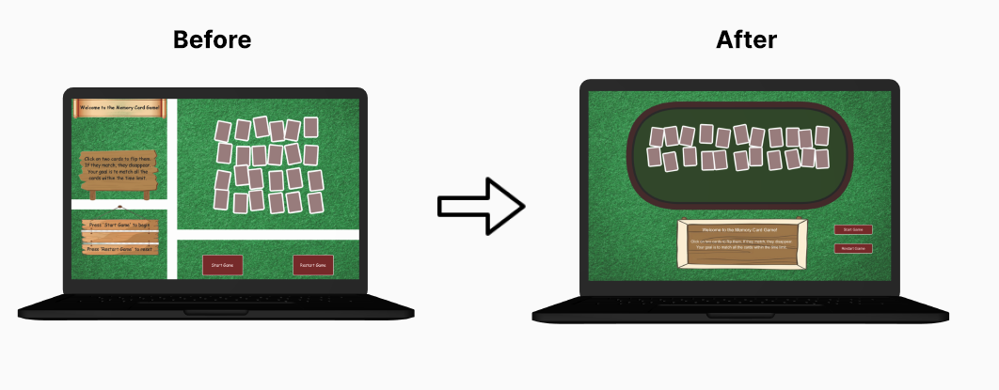

01. UX Research & Personas
The project started with a core question: How can we help employees recover focus during high-pressure workdays? My research identified three key personas: the Efficiency Seeker (needs a quick reset), the Overwhelmed Employee (needs a stress reliever), and the Growth-Minded Individual (seeks cognitive challenges).
This study led to the "Micro-break" concept—a 30-second gaming interval designed to engage short-term memory and provide a sensory shift away from work tasks.
02. Interaction Design & Flow
I mapped out the Game Flow to ensure a friction-less experience. By analyzing the user journey from the Start Menu to the high-stakes match detection, I reduced cognitive load by simplifying transitions and providing immediate visual feedback for every user action.

03. Technical Development
Built using Processing (Java), the project required robust state management. I developed a custom card object system and utilized array-based logic to handle shuffling, flipping animations, and time-sensitive match detection.


04. Iteration & Improvement
User testing revealed that users needed stronger visual cues for successful matches. I refined the visual hierarchy, added highlight effects for matched pairs, and optimized the UI for better legibility under fast-paced gameplay.

05. Gameplay Demonstrations
These demonstrations showcase the final product's two primary outcomes: maintaining focus to win within the time limit, and the consequences of the countdown reaching zero.